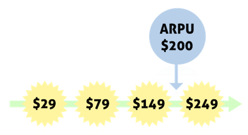
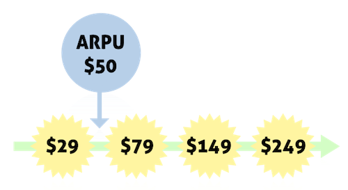

Average Revenue Per User – How to use it?
When you look at your metrics the first time, you are probably wondering:
“Is this a good value? Am I kicking ass or throwing away money?”
This article explains a couple of ways to use Average Revenue Per User (ARPU). It answers some common questions and shows how optimal trend looks in charts.
If ARPU is new to you, you may want to see the cheatsheet on ARPU first.
If you have a question about ARPU that isn't answered here, please contact support .
Is $20 a good number or a bad number?
ARPU doesn’t have any optimal value. But there’s a rule:
If ARPU is small, you need a huge amount of customers. If ARPU is big, you can manage with less.
So when you evaluate ARPU, the biggest question is: “how many customers can you reach and acquire?”
If your ARPU is $20 then you need 500 customers to make $10,000 per month.
But if ARPU would be $80 then you’d only need 125 customers to make $10,000 – and if you’d get 500 customers that would mean $40,000 per month.
If you see other company's metrics, ARPU helps you to guess who the product is targeted to. Low-ARPU businesses often target consumers.
ARPU is a great tool to evaluate if you have the resources to acquire the needed customers and make your business a success.
If you want to compare your ARPU to another company’s ARPU, make sure that they target the same audience with a similar product concept.
ARPU can give you a hint if you are pricing right
ARPU tells you what plans people prefer.
If ARPU is high related to your plan prices, most of your customers are in high-priced plans. This is a good thing – but it can also be a sign that you are throwing away money.

Why? If big part of your customers choose the highest plan, there’s a possibility that at least part of them would be happy to pay more. And if you aren’t offering them a possibility to pay more, you lose that money.
So when the ARPU hits your middle plan price, it’s time to add new price points or add-ons.
Always do this type of analysis in the context of your business. Never look at just one metric and draw this type of conclusions only from it.
If ARPU is near to your lowest plan price, it may be a sign that you could improve your marketing.

You are acquiring people who pay little, when your product could also serve people who’d pay more. Or, it may be a sign that your product is best suited for the people in lower priced plans.
Low ARPU means that most of your customers are in the low-priced plans. So if you try to raise ARPU by dropping the lowest price point, it will most likely backfire.
Optimal ARPU – The sales team effect
When you collect ARPUs from several months and put the values to a timeline, you’ll want the line to go upwards. But the optimal line doesn’t just go up. It looks like this:
I call this ‘the sales team effect’, because if often happens when you hire a sales team.
That’s when people rethink the prices and find out who their ideal customers are. Then the sales team starts targeting those people, often selling high-priced plans with annual commitment.
But nothing stops you from doing those same things without a sales team. Just offer upgrades, add-ons, annual plans and advertise them a little. Everything will happen more slowly without a sales team, but that’s just fine.
Poor performance – the flat line
You might think that the worst ARPU trend is a downwards trend. But it isn’t.
The worst possible ARPU trend is a flat line – because it tells that you don’t have price points or you aren’t experimenting with prices at all.
Having just one plan and not trying out different prices is the best way to throw away money with SaaS. You are ignoring the strongest financial lever that your business has.
Of course some audiences are really sensitive to prices, but maybe you could frame the pricing experiments so that you could roll back if needed?
If your ARPU looks flat, it’s time to do something to those prices!
Downwards ARPU trend is fine when you introduce annual plans
As always with SaaS, long-term business value and short term revenue play a tug of war. If you ask ARPU, the short term wins. But you want long-term wins too, like when you improve retention.
When you push people to the annual plans, ARPU will go down slightly. That’s because people in annual plans often have a discount, so they pay less per month. But as they are committed to stay at least 12 months, they’ll eventually pay you more. Which is great and you shouldn’t panic and start preferring monthly plans again.